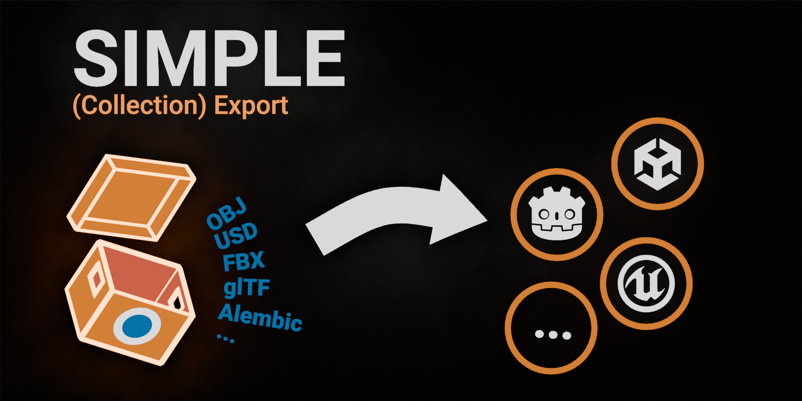
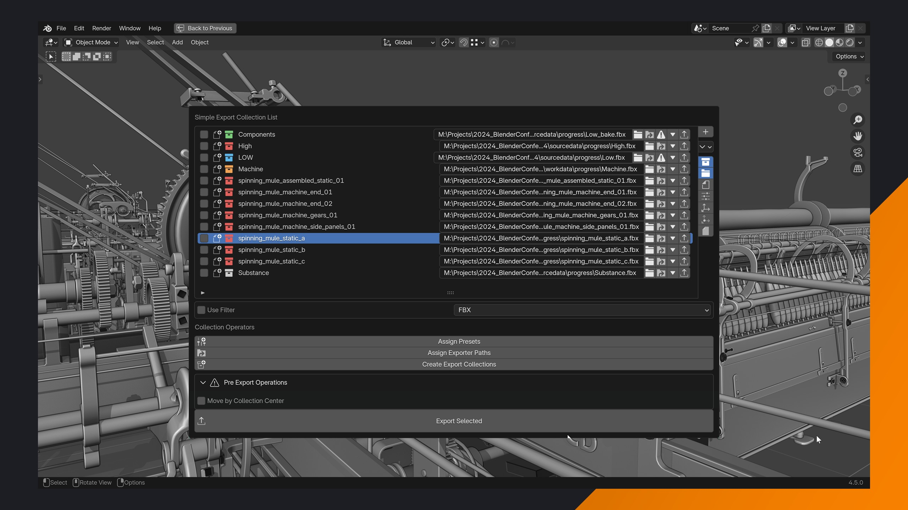
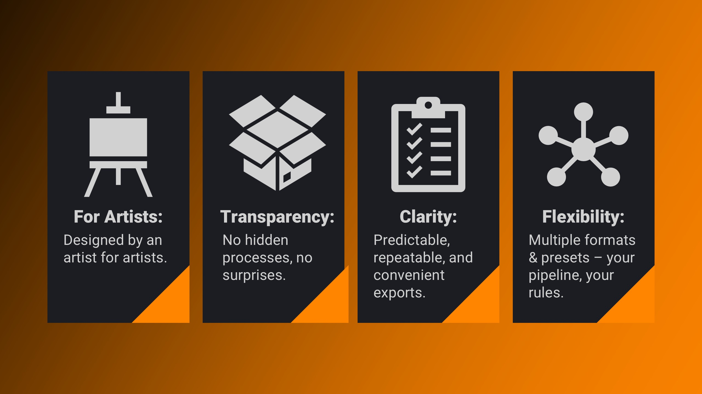
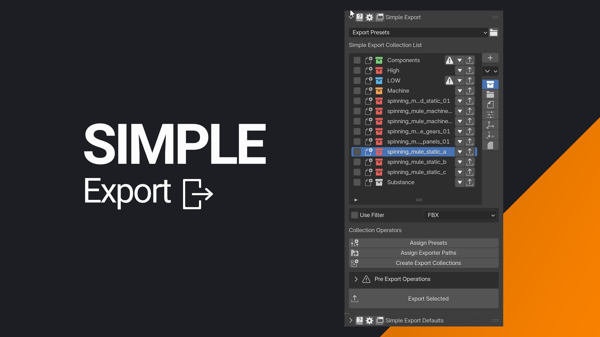

Simple (Collection) Export

Join the Beta:
Join the Simple Export Beta (40% off) and help shape the final product!.
Simple Export is currently focusing on Static Mesh Workflows with dedicated animation presets planned for future updates.

Do you really need another export add-on?
Only if you want full control, transparency, and a smarter way to manage exports.
Simple Export doesn’t hide behind black boxes or force you into rigid workflows. Instead, it enhances Blender’s built-in collection exporter, giving you:
- Total Transparency: Every setting is visible, documented, and saved in your
.blendfile —so you always know exactly what’s being exported. No hidden processes, no surprises. - Full Control: Highly configurable presets allow you to adjust, save, and reuse settings for predictable, repeatable results — tailored to your project or pipeline.
- Engine-Ready Presets: Built-in and production oriented presets for Unreal, Unity, Godot, and baking workflows — use them as-is or customize them to fit your needs.
- Streamlined Workflow: Create, manage, and preview all export collections in one place, saving time and reducing errors.
With over a decade of experience with real-time engines and production pipelines, I designed Simple Export’s presets based on real-world needs. Every preset is documented and ready to use, but they’re also fully customizable. Whether you’re exporting to Unreal, Unity, or Godot, or preparing assets for baking, these presets give you a proven starting point—so you can focus on refining, not reinventing. Your project, your rules.

Feature Highlights
- Intuitive UI: All export collections in sight.
- One-Click Batch Export: Export multiple collections or scenes in seconds.
- Built-In Presets: Ready-to-use settings for Unreal, Unity, and Godot.
- Blender-Native: Files stay compatible, even without the add-on.
- Auto Directory Setup: No more manual folder creation.
- Persistent Settings: Export settings saved in your .blend file.
- Custom Export Paths: Easily define and adjust export paths for collections.
- Documentation: All presets and features are fully documented.
Supported Formats: FBX, Alembic, USD, OBJ, glTF, STL, PLY
Presets
Use the presets as-is, tweak them, or build your own. Simple Export adapts to your workflow, not the other way around.

Setup & Export in Seconds
- Select a preset (Unity, Unreal, Godot, or custom).
- Create an export collection (3D Viewport, N-panel, or Outliner)—settings auto-apply.
- Export—selected or batch.
See it in action: for exporting high and low poly meshes:
Why Use Simple Export?

Simple Export builds on Blender’s existing functionality to simplify and organize the export process. It’s designed to save time, reduce errors, and improve collaboration by maintaining compatibility with Blender's native tools.
- Seamless Collaboration: Export settings stay in your .blend file—no add-on required for teammates.
- Pre-Configured Presets: Quick setup for Unreal, Unity, Godot, and baking—ready in seconds.
- Effortless Batch Exports: Export multiple collections or scenes with one click.
- Flexible & Scalable: Adapt presets to any project or pipeline—no rigid workflows.
Why Trust Simple Export?
I’ve spent over a decade refining workflows for real-time engines, and my tools—Simple Renaming, Simple Collider, and Simple Camera Manager—are used and trusted by thousands of artists and studios worldwide.
- Simple Renaming (20,000+ users)
- Simple Collider (500+ users)
- Simple Camera Manager
Testimonials
What other artists from the games industry say about Simple Exporter:
 |
Mikael Kivi - Environment Artist | Remedy Entertainment
No more manually fiddling with export settings and wasting time with browsing folders constantly on each export! Simple Exporter has become a part of my everyday workflow, both on professional and personal projects - just hit a shortcut and the add-on takes care of everything. Everyone has a set of 'must have' add-ons for Blender. For me - this is one of them! |
🚀 Join the Beta Today Get 40% off at launch and be amongst the first to export faster, collaborate more easily, and create more.